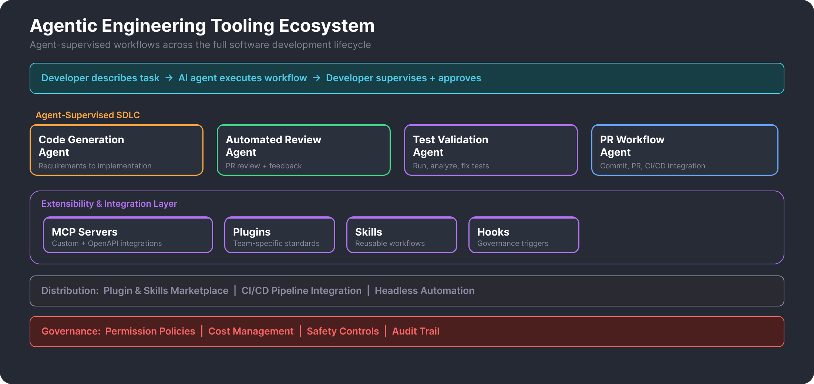

Overview
Defined and implemented the AI-assisted development strategy across the engineering organization, driving the shift from traditional development workflows to agent-supervised engineering where developers describe tasks and AI agents execute across the full software lifecycle. This is not about adding autocomplete to an IDE — it is a fundamental change in how code gets written, reviewed, tested, and shipped.
Built the full ecosystem: coding agents for implementation, autonomous review agents for PR feedback, test automation agents, and CI/CD integration — all connected through custom MCP servers, plugins, skills, and governance controls packaged as shared infrastructure that teams adopt progressively based on workflow needs.
Key Highlights
- Agent-Supervised SDLC — Code generation, automated review, test validation, and PR workflows driven by AI agents with human oversight, not manual execution.
- MCP Integration Layer — Custom and OpenAPI-based MCP servers connecting agents to internal systems, repos, CI/CD pipelines, and enterprise APIs.
- Extensibility Stack — Plugins for team-specific standards, skills for reusable workflows, and hooks for governance — all as shared organizational infrastructure.
- Progressive Adoption — Teams enable capabilities incrementally rather than all-at-once, from basic code assistance through full autonomous workflows.
- Headless Automation — Agents run in CI/CD pipelines for automated PR review, code generation, and test validation without human interaction.
- Governance at Scale — Hook-based safety controls, permission policies, and cost management making AI-assisted development safe and auditable across the organization.
- Plugin & Skills Marketplace — Centralized registry where engineering teams discover and adopt pre-built capabilities without per-team engineering effort.
Architecture

Impact
The Shift: Manual to Agent-Supervised
The traditional development model is: developer writes code, tools validate it. The agent-supervised model inverts this: developer describes the task, AI agent performs much of the workflow, developer supervises and approves. The agent reads files, searches the repo, edits code, runs shell commands, validates changes, iterates, and prepares the PR. The developer stays in control but operates at a higher level of abstraction.
This is not a single tool adoption — it is an organizational shift in the engineering operating model, requiring infrastructure (MCP servers, plugins), governance (hooks, permissions, cost controls), and a progressive adoption path that lets teams move at their own pace.
Agent-Supervised Development Lifecycle
Code Generation
Agents handle requirements-to-implementation workflows: reading existing code, understanding project structure, generating new code that follows team conventions, and iterating based on test results. Custom skills encode team-specific patterns so the agent produces code that matches organizational standards from the start.
Automated Code Review
Autonomous review agents integrated into CI/CD pipelines, combining custom-built review logic with Greptile — an AI code review agent that indexes the entire codebase and builds a semantic code graph to understand how changes affect the whole system. When a PR is opened, the agent reviews the diff with full repo context, identifies issues, suggests improvements, and posts feedback — all before a human reviewer sees it. This catches common issues early and reduces review turnaround from hours to minutes.
Test Validation
Agents that run test suites, analyze failures, identify likely files to change, modify code, rerun tests, and iterate until passing. When tests fail in CI, the agent can diagnose the root cause and prepare a fix — turning a broken build into a ready-to-merge fix with human approval.
PR Workflows
End-to-end pull request lifecycle automation: commit preparation, PR description generation, CI/CD integration, and post-merge cleanup. Headless mode enables agents to run in pipelines without interactive input, responding to events like PR creation or CI failure.
Extensibility & Integration
MCP Servers
Custom and OpenAPI-based MCP servers that connect agents to the engineering ecosystem — internal APIs, databases, CI/CD systems, code repositories, and enterprise tools. MCP is the standard integration protocol, ensuring agents interact with organizational systems through governed, composable access points rather than ad-hoc integrations.
Plugins, Skills, and Hooks
Plugins encode team-specific standards — coding conventions, architectural patterns, review criteria — so agents produce output that matches what the team expects without per-query configuration. Skills are reusable workflow modules — test runner, repo analysis, PR summary, lint fix — that any team can adopt from the marketplace. Hooks are event-driven governance triggers that intercept agent actions before or after execution — enforcing file restrictions, cost limits, safety policies, and audit logging at the organizational level.
Progressive Adoption
Teams don't adopt everything at once. The ecosystem is designed for incremental enablement: start with basic code assistance, add review automation when comfortable, layer in test agents, and eventually move to full autonomous workflows with headless CI/CD integration. The Title insurance team became the deepest adopter, achieving 50% PR cycle time reduction and 50% faster feature delivery.
Governance
AI-assisted development at organizational scale requires governance infrastructure, not just tools:
- Hook-based safety controls — intercept and validate agent actions before execution (file restrictions, dangerous command prevention)
- Permission policies — control what agents can read, write, and execute per team and per project
- Cost management — budget caps and token tracking to prevent runaway usage
- Audit trail — every agent action logged for compliance and debugging
Technology Stack
Platform
Claude Code, Gemini CLI, OpenCode, Claude Agent SDK
Integration
MCP (Custom + OpenAPI), Greptile
Extensibility
Plugins, Skills, Hooks
Governance
Permission Policies, Cost Controls, Audit
Languages
TypeScript, Python
My Role
- Strategy & Architecture — defined the AI-assisted development strategy and designed the agent ecosystem spanning coding, review, testing, and delivery
- Hands-on Development — built custom MCP servers, plugins, skills, hooks, and governance controls as shared organizational infrastructure
- CI/CD Integration — integrated autonomous agents into pipelines for automated review, code generation, and test validation
- Adoption & Enablement — drove progressive adoption from initial tooling through full autonomous workflows across engineering teams